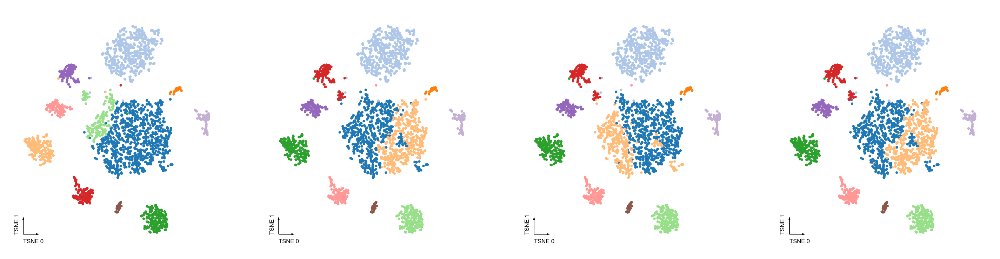
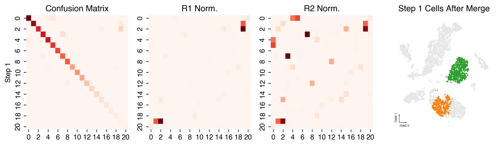
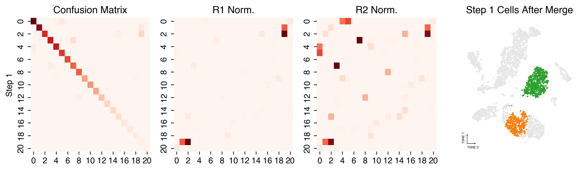
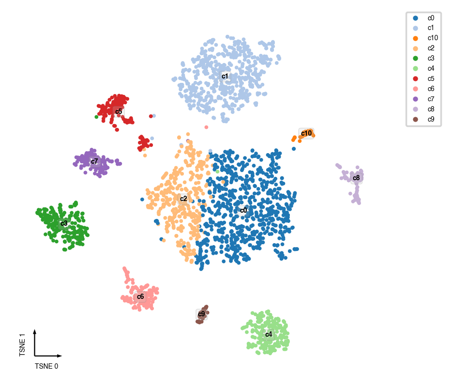
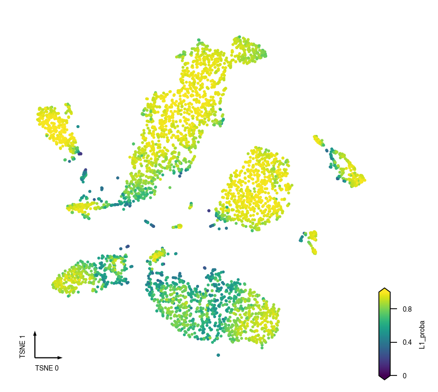
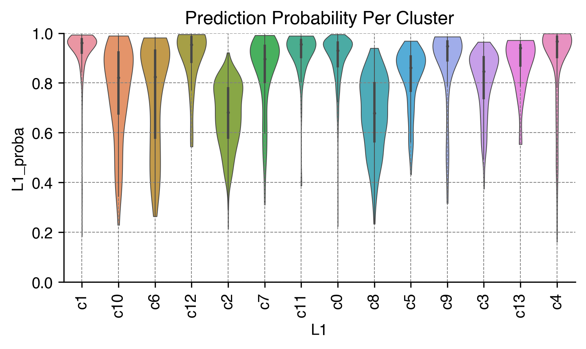
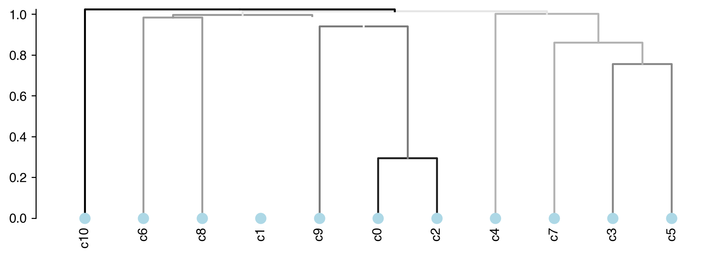
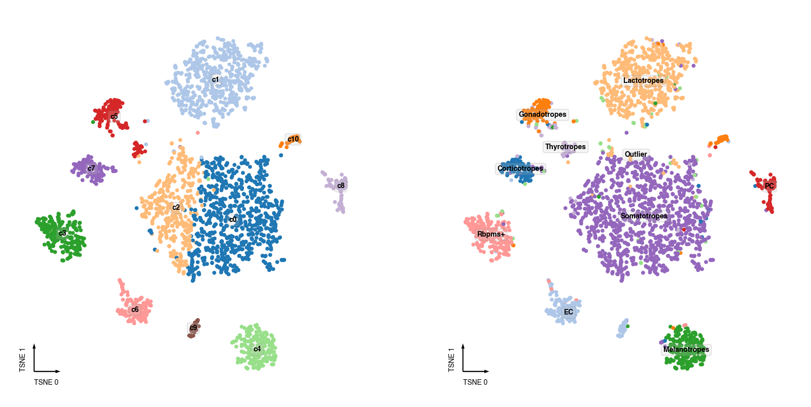

Consensus Clustering
Contents
Consensus Clustering¶
Purpose¶
The purpose of this step is to run consensus clustering.
Input¶
Cell-by-components matrix from the decompusition analysis.
Output¶
Adata file with cluster annotated.
Import¶
import pathlib
import anndata
import numpy as np
import pandas as pd
import seaborn as sns
import matplotlib.pyplot as plt
from ALLCools.clustering import ConsensusClustering, Dendrogram, get_pc_centers
from ALLCools.plot import *
Parameters¶
# clustering name
clustering_name = 'L1'
# input data
cell_meta_path = './CellMetadata.PassQC.csv.gz'
adata_path = './adata.with_coords.mcad'
coord_base = 'tsne'
# ConsensusClustering
n_neighbors = 25
metric = 'euclidean'
min_cluster_size = 10
consensus_rate = 0.5
leiden_repeats = 500
leiden_resolution = 0.5
random_state = 0
n_jobs = 40
train_frac = 0.5
train_max_n = 500
max_iter = 20
# Dendrogram via Multiscale Bootstrap Resampling
nboot = 10000
method_dist = 'correlation'
method_hclust = 'average'
plot_type = 'static'
Load Data¶
cell_meta = pd.read_csv(cell_meta_path, index_col=0)
adata = anndata.read_h5ad(adata_path)
Consensus Clustering¶
cc = ConsensusClustering(model=None,
n_neighbors=n_neighbors,
metric=metric,
min_cluster_size=min_cluster_size,
leiden_repeats=leiden_repeats,
leiden_resolution=leiden_resolution,
consensus_rate=consensus_rate,
random_state=random_state,
train_frac=train_frac,
train_max_n=train_max_n,
max_iter=max_iter,
n_jobs=n_jobs)
if 'X_pca' not in adata.obsm:
raise KeyError(
'X_pca do not exist in the adata file, run PCA first before clustering.'
)
cc.fit_predict(adata.obsm['X_pca'])
Computing nearest neighbor graph
Computing multiple clustering with different random seeds
Repeating leiden clustering 500 times
Found 10 - 12 clusters, mean 11.0, std 0.23
Summarizing multiple clustering results
2751 cells assigned to 11 raw clusters
5 cells are multi-leiden outliers
=== Start supervise model training and cluster merging ===
=== iteration 1 ===
11 non-outlier labels
Balanced accuracy on the training set: 0.968
Balanced accuracy on the hold-out set: 0.972
Stop iteration because current accuracy 0.972 > target accuracy 0.950.
=== Assign final labels ===
Assigned all the multi-leiden clustering outliers into clusters using the prediction model from final clustering version.
Final ten-fold CV Accuracy on all the cells: 0.966
Plot ConsensusClustering Details¶
Individual Leiden runs with different random states¶
adata.obs[f'{coord_base}_0'] = adata.obsm[f'X_{coord_base}'][:, 0]
adata.obs[f'{coord_base}_1'] = adata.obsm[f'X_{coord_base}'][:, 1]
fig, axes = cc.plot_leiden_cases(coord_data=adata.obs,
coord_base=coord_base)

Merging steps¶
cc.plot_steps(coord_data=adata.obs, coord_base=coord_base)
 

Plot Final Clustering Results¶
Cluster Lables¶
adata.obs[clustering_name] = cc.label
fig, ax = plt.subplots(figsize=(4, 4), dpi=250)
_ = categorical_scatter(data=adata.obs,
ax=ax,
hue=clustering_name,
coord_base=coord_base,
palette='tab20',
text_anno=clustering_name,
show_legend=True)

Final Prediction Probability¶
adata.obs[clustering_name + '_proba'] = cc.label_proba
fig, ax = plt.subplots(figsize=(4, 4), dpi=250)
_ = continuous_scatter(data=adata.obs,
ax=ax,
hue_norm=(0, 1),
hue=clustering_name + '_proba',
coord_base=coord_base)

Prediction Probability Per Cluster¶
fig, ax = plt.subplots(figsize=(6, 3), dpi=300)
sns.violinplot(data=adata.obs,
x=clustering_name,
y=clustering_name + '_proba',
scale='width',
linewidth=0.5,
cut=0,
ax=ax)
ax.set(ylim=(0, 1), title='Prediction Probability Per Cluster')
ax.xaxis.set_tick_params(rotation=90)
ax.grid(linewidth=0.5, color='gray', linestyle='--')
sns.despine(ax=ax)

Calculate Cluster Dendrogram¶
# using the cluster centroids in PC space to calculate dendrogram
pc_center = get_pc_centers(adata, group=clustering_name)
# calculate the cluster dendrogram using R package pvclust
dendro = Dendrogram(nboot=nboot,
method_dist=method_dist,
method_hclust=method_hclust,
n_jobs=n_jobs)
dendro.fit(pc_center)
Creating a temporary cluster...done:
socket cluster with 40 nodes on host ‘localhost’
Multiscale bootstrap... Done.
fig, ax = plt.subplots(figsize=(9, 3), dpi=250)
_ = plot_dendrogram(dendro=dendro.dendrogram,
linkage_df=dendro.linkage,
ax=ax,
plot_non_singleton=False,
line_hue=dendro.edge_stats['au'], # au is the branch confidence score, see pvclust documentation
line_hue_norm=(0.5, 1))

Sanity Test¶
if 'CellTypeAnno' in cell_meta:
fig, axes = plt.subplots(figsize=(8, 4), dpi=250, ncols=2)
ax = axes[0]
_ = categorical_scatter(data=adata.obs,
ax=ax,
hue=clustering_name,
coord_base=coord_base,
palette='tab20',
text_anno=clustering_name,
show_legend=False)
ax = axes[1]
adata.obs['CellTypeAnno'] = cell_meta['CellTypeAnno']
_ = categorical_scatter(data=adata.obs.dropna(subset=['CellTypeAnno']),
ax=ax,
hue='CellTypeAnno',
coord_base=coord_base,
palette='tab20',
text_anno='CellTypeAnno',
show_legend=False)

Save¶
cc.save(f'{clustering_name}.ConcensusClustering.model.lib')
dendro.save(f'{clustering_name}.Dendrogram.lib')
adata.write_h5ad(adata_path)
/home/hanliu/miniconda3/envs/allcools_new/lib/python3.8/site-packages/anndata/_core/anndata.py:1228: FutureWarning: The `inplace` parameter in pandas.Categorical.reorder_categories is deprecated and will be removed in a future version. Reordering categories will always return a new Categorical object.
c.reorder_categories(natsorted(c.categories), inplace=True)
... storing 'CellTypeAnno' as categorical
/home/hanliu/miniconda3/envs/allcools_new/lib/python3.8/site-packages/anndata/_core/anndata.py:1228: FutureWarning: The `inplace` parameter in pandas.Categorical.reorder_categories is deprecated and will be removed in a future version. Reordering categories will always return a new Categorical object.
c.reorder_categories(natsorted(c.categories), inplace=True)
... storing 'L1' as categorical
adata
AnnData object with n_obs × n_vars = 2756 × 288429
obs: 'CellInputReadPairs', 'MappingRate', 'FinalmCReads', 'mCCCFrac', 'mCGFrac', 'mCHFrac', 'Plate', 'Col384', 'Row384', 'CellTypeAnno', 'leiden', 'tsne_0', 'tsne_1', 'L1', 'L1_proba'
var: 'chrom', 'end', 'start'
uns: 'leiden', 'leiden_sizes', 'neighbors', 'paga', 'umap'
obsm: 'X_pca', 'X_tsne', 'X_umap'
obsp: 'connectivities', 'distances'